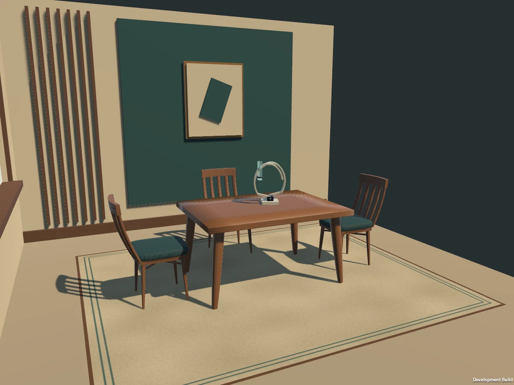

IN DEVELOPMENT · SIMULATOR-TESTED
SpacePlan MR
Explore how mixed reality can make room planning more intuitive: place furniture and wall art, edit layouts, and return to saved arrangements.

Developing a mixed-reality room-planning workflow with gaze and pinch interactions, furniture placement, layout persistence, and guided room-readiness states.
Simulator workflows have exercised chair and wall-art placement, save/reopen behavior, and recovery scenarios. Work continues on presentation, reliability, and performance.
Prototype—not a released product. Physical room sensing, device performance, and real-world anchor behavior remain unverified. No public source or live demo is provided.